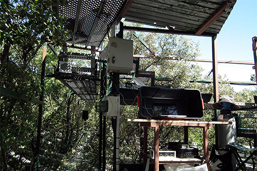
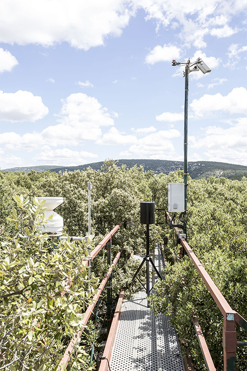
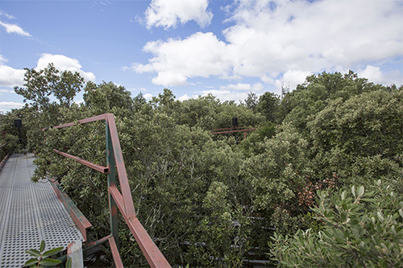

Détail, dispositif de sècheresse controlée, Site expérimental CEFE - CNRS de la Forêt de Puéchabon, photo Sabrina Issa, 2016.
CONCERTO POUR FLUX DE SEVE
C'est au cœur d’une forêt, que Concerto pour flux de sève, s’attache à rendre audible le rythme biologique des plantes et la corrélation, complexe, de celui-ci avec les données environnementales. Les données météorologiques de la forêt et le flux de sève ascendant dans les arbres deviennent une matière sonore, spatialisée sur le site à la manière d’un orchestre.
Dans l’installation, c’est notre cheminement à travers les arbres qui nous communique le rythme, l’intensité et les variations d’un environnement où les évolutions sont partagées. Dans ce projet, notre démarche vise à rendre une dimension « physique » de la forêt émotionnelle et tangible en réunissant sur un même temps l’analyse et l’expressivité du vivant.
La forêt domaniale de Puéchabon étudiée depuis 1984 par les chercheurs du CEFE-CNRS (Centre d’Ecologie Fonctionnelle et Evolutive à Montpellier). Afin de répondre aux questions liées aux changements climatiques et leurs impacts sur l’écosystème forestier, le site est équipé de différents dispositifs qui permettent l’étude expérimentale de la sécheresse à différentes échelles de temps.
Site expérimental de Puéchabon (Lien)
Matériaux : installation sonore générée en temps-réel et en continu, à partir d'une année de données environnementales et liées à l'activité de flux de sève des chênes vert, enregistrées sur le site. Formation à 10 voix, 6 enceintes extérieures, 2 enceintes à ultrasons paramétriques et 2 transducteurs à infrabasse. Vidéo réalisée sur l'installation, Concerto pour montée de sève.
Site expérimental CEFE - CNRS de la Forêt de Puéchabon. Delphine Chevrot, 2017.

Concerto pour montée de sève, vue de l'installation sonore, Site expérimental CEFE - CNRS de la Forêt de Puéchabon, Hérault. Photo Delphine Chevrot. LAAB, juillet 2017.

Concerto pour montée de sève, vue de l'installation sonore, Site expérimental CEFE - CNRS de la Forêt de Puéchabon, Hérault. Photo Delphine Chevrot. LAAB, juillet 2017.

Concerto pour montée de sève, vue de l'installation sonore, Site expérimental CEFE - CNRS de la Forêt de Puéchabon, Hérault. Photo Delphine Chevrot. LAAB, juillet 2017.